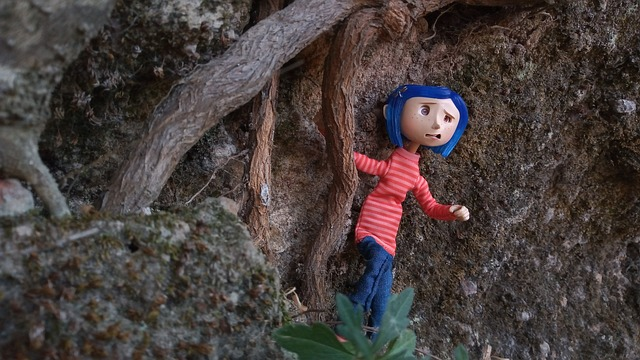

Why Coraline is Great
Coraline is an iconic film known by many for it's pleasing visuals and creepy aesthetic. As one of the millions of Coraline fans, I have watched this film since childhood and it has always left a lasting impression on me. But for some, this childhood classic is viewed as being "too scary for kids". Although the film recieved mixed reviews from the parents and children who viewed it, it is considered a cult film masterpiece to this day. Not for the cute and cuddly feeling you probably don't get from watching it. Most do not undertsand that the film is simply meant to be a children's horror.
What better way to introduce a child to their first horror film could there be?
Find out more on Coraline for yourself!